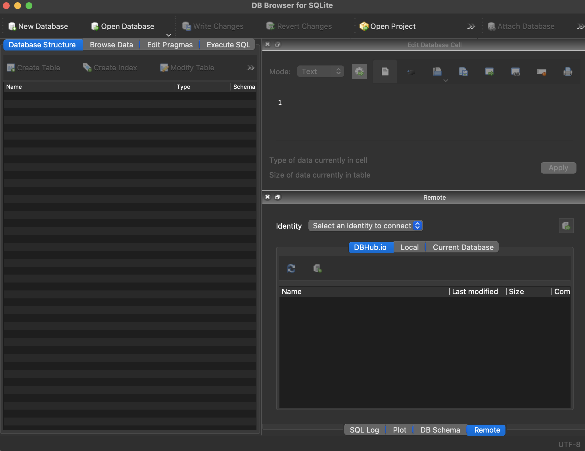

SELECT
surname
FROM
politicians;Online Appendix C — SQL 필수
선행 조건
- SQL의 초기 역사 읽기, (Chamberlin 2012)
- SQL 개발에 대한 흥미로운 개요.
핵심 개념 및 기술
- 다양한 R 패키지를 사용하거나 RStudio 내에서 SQL을 작성할 수 있지만, SQL에 대한 산업 수요로 인해 적어도 처음에는 R과 독립적으로 배우는 것이 좋습니다.
- SQLite는 SQL의 한 종류이며, SQL용 IDE로 DB Browser for SQLite를 사용할 수 있습니다.
주요 패키지 및 함수
BETWEENDESCDISTINCTFROMGROUP BYLEFT JOINLIKELIMITORORDER BYSELECTUPDATEWHERE
C.1 서론
구조화된 쿼리 언어(SQL) (“시퀄” 또는 “에스큐엘”)는 관계형 데이터베이스와 함께 사용됩니다. 관계형 데이터베이스는 하나 이상의 테이블 모음이며, 테이블은 행과 열로 구성된 데이터입니다. 데이터베이스에 테이블이 두 개 이상 있는 경우, 테이블을 연결하는 열이 있어야 합니다. 예를 들어, 부록 A 에서 사용되는 AustralianPoliticians 데이터셋이 있습니다. SQL을 사용하는 것은 마크업과 프로그래밍의 중간쯤 되는 HTML/CSS와 비슷하게 느껴집니다. 한 가지 재미있는 점은 관례적으로 명령어가 대문자로 작성된다는 것입니다. 또 다른 점은 줄 공백은 아무 의미가 없다는 것입니다. 포함하든 안 하든 상관없지만, 항상 SQL 명령은 세미콜론으로 끝나야 합니다.
SQL은 1970년대 IBM에서 개발되었습니다. SQL은 데이터를 다루는 특히 인기 있는 방법입니다. 닫힌 옵션과 열린 옵션을 포함하여 다양한 “SQL 종류”가 있습니다. 여기서는 오픈 소스이며 Mac에 사전 설치된 SQLite를 소개합니다. Windows 사용자는 여기에서 설치할 수 있습니다.
고급 SQL 사용자는 SQL만으로 많은 작업을 수행하지만, SQL에 대한 실무 지식만 있어도 액세스할 수 있는 데이터셋의 수가 증가합니다. SQL에 대한 실무 지식은 많은 데이터셋이 SQL 서버에 저장되어 있고, 직접 데이터를 가져올 수 있다는 점에서 효율성에 특히 유용합니다.
RStudio 내에서 SQL을 사용할 수 있습니다. 특히 DBI (R Special Interest Group on Databases (R-SIG-DB), Wickham, 와/과 Müller 2022) 를 활용할 수 있습니다. 그러나 R 기술에 대한 수요와는 별개로 SQL 기술에 대한 수요를 고려할 때, RStudio와 독립적으로 SQL에 대한 실무 지식을 갖는 것이 경력 관점에서 더 나은 아이디어일 수 있습니다. 많은 SQL 명령을 이 책 전체에서 사용한 dplyr 동사의 간단한 변형으로 간주할 수 있습니다. 실제로 R 내에 머물고 싶다면 dbplyr (Wickham, Girlich, 와/과 Ruiz 2022) 를 사용하면 dplyr 함수를 명시적으로 사용할 수 있으며, 그러면 자동으로 SQL로 변환됩니다. tidyverse에서 mutate(), filter(), left_join()을 사용해 본 경험이 있다면 많은 핵심 SQL 명령이 익숙할 것입니다. 이는 SQL이 까다로울 수 있으므로 주요 어려움은 연산 순서를 파악하는 것임을 의미합니다.
C.2 시작하기
SQL을 시작하려면 무료 오픈 소스인 DB Browser for SQLite (DB4S)를 다운로드하여 엽니다(그림 C.1).

여기에서 “AustralianPoliticians.db”를 다운로드한 다음 “데이터베이스 열기”로 열고 데이터베이스를 다운로드한 위치로 이동합니다.
이제 다룰 세 가지 주요 SQL 명령은 SELECT, FROM, WHERE입니다. SELECT를 사용하면 데이터의 특정 열을 지정할 수 있으며, SELECT를 select()와 유사하게 고려할 수 있습니다. select()로 데이터셋을 지정해야 하고 파이프 연산자를 사용하여 그렇게 했던 것과 마찬가지로, FROM으로 데이터셋을 지정합니다. 예를 들어, “SQL 실행”을 열고 다음을 입력한 다음 “실행”을 클릭할 수 있습니다.
결과는 성(surname) 열을 얻는 것입니다. 쉼표로 구분하여 여러 열을 선택하거나, 별표를 사용하여 모든 열을 선택할 수 있지만, 데이터셋이 우리가 모르는 사이에 변경될 경우 결과가 달라질 수 있으므로 이는 모범 사례가 아닙니다.
SELECT
uniqueID,
surname
FROM
politicians;SELECT
*
FROM
politicians;마지막으로, 반복되는 행이 있다면 DISTINCT를 사용하여 고유한 행만 볼 수 있습니다. 이는 distinct()와 유사합니다.
SELECT
DISTINCT surname
FROM
politicians;지금까지 SELECT와 FROM을 사용했습니다. 일반적으로 사용되는 세 번째 명령은 WHERE이며, 이는 filter()와 유사하게 특정 행에 초점을 맞출 수 있도록 합니다.
SELECT
uniqueID,
surname,
firstName
FROM
politicians
WHERE
firstName = "Myles";“=”, “!=”, “>”, “<”, “>=”, “<=”와 같은 모든 일반적인 논리 연산자는 WHERE와 함께 사용할 수 있습니다. AND와 OR를 사용하여 조건을 결합할 수 있습니다.
SELECT
uniqueID,
surname,
firstName
FROM
politicians
WHERE
firstName = "Myles"
OR firstName = "Ruth";많은 결과를 반환하는 쿼리가 있다면 LIMIT를 사용하여 결과 수를 제한할 수 있습니다.
SELECT
uniqueID,
surname,
firstName
FROM
politicians
WHERE
firstName = "Robert" LIMIT 5;그리고 ORDER를 사용하여 결과의 순서를 지정할 수 있습니다.
SELECT
uniqueID,
surname,
firstName
FROM
politicians
WHERE
firstName = "Robert"
ORDER BY
surname DESC;기준에 매우 가까운 행을 확인하십시오:
SELECT
uniqueID,
surname,
firstName
FROM
politicians
WHERE
firstName LIKE "Ma__";위의 “_“는 모든 문자와 일치하는 와일드카드입니다. 이는”Mary”와 “Mark”를 포함하는 결과를 제공합니다. LIKE는 대소문자를 구분하지 않습니다: “Ma“와”ma” 모두 동일한 결과를 반환합니다.
“NULL” 또는 “NOT NULL”을 사용하여 누락된 데이터에 초점을 맞출 수 있습니다.
SELECT
uniqueID,
surname,
firstName,
comment
FROM
politicians
WHERE
comment IS NULL;숫자, 날짜, 텍스트 필드에 순서가 적용되어 BETWEEN을 모든 필드에 사용할 수 있습니다. 숫자뿐만 아니라. 예를 들어, X와 Z 사이의 문자로 시작하는 모든 성을 찾을 수 있습니다 (Z는 포함하지 않음).
SELECT
uniqueID,
surname,
firstName
FROM
politicians
WHERE
surname BETWEEN "X" AND "Z";숫자 변수와 함께 WHERE를 사용하면 BETWEEN이 포함적입니다. 문자와 함께 사용한 예시와는 다릅니다.
SELECT
uniqueID,
surname,
firstName,
birthYear
FROM
politicians
WHERE
birthYear BETWEEN 1980 AND 1990;요청한 데이터셋 관측치를 제공하는 것 외에도 데이터셋을 수정할 수 있습니다. 예를 들어, UPDATE와 SET을 사용하여 값을 편집할 수 있습니다.
UPDATE
politicians
SET
displayName = "John Gilbert Alexander"
WHERE
uniqueID = "Alexander1951";CASE와 ELSE를 사용하여 if-else 논리를 통합할 수 있습니다. 예를 들어, “Josh Frydenberg”의 경우 “Yes”, “Kevin Rudd”의 경우 “No”, 다른 모든 경우 “Unsure”인 “wasTreasurer”라는 열을 추가할 수 있습니다.
SELECT
uniqueID,
surname,
firstName,
birthYear,
CASE
WHEN uniqueID = "Frydenberg1971" THEN "Yes"
WHEN surname = "Rudd" THEN "No"
ELSE "Unsure"
END AS "wasTreasurer"
FROM
politicians;summarize() 대신 COUNT, SUM, MAX, MIN, AVG, ROUND와 같은 명령을 사용하여 요약 통계를 생성할 수 있습니다. COUNT는 열 이름을 전달하여 해당 열에 대해 비어 있지 않은 행의 수를 계산하며, MIN 등도 유사하게 작동합니다.
SELECT
COUNT(uniqueID)
FROM
politicians;SELECT
MIN(birthYear)
FROM
politicians;R의 group_by와 유사하게 GROUP BY를 사용하여 데이터셋의 다른 그룹을 기반으로 결과를 얻을 수 있습니다.
SELECT
COUNT(uniqueID)
FROM
politicians
GROUP BY
gender;마지막으로 LEFT JOIN을 사용하여 두 테이블을 결합할 수 있습니다. 점 표기법을 사용하여 일치하는 열을 지정하는 데 주의해야 합니다.
SELECT
politicians.uniqueID,
politicians.firstName,
politicians.surname,
party.partySimplifiedName
FROM
politicians
LEFT JOIN
party
ON politicians.uniqueID = party.uniqueID;SQL은 우리의 초점이 아니므로 몇 가지 필수 명령에 대한 간략한 개요만 제공했습니다. 경력 관점에서 SQL에 익숙해져야 합니다. SQL은 데이터 과학에 너무나 통합되어 있어서 “SQL 없이는 너무 멀리 갈 수 없을 것” (Robinson 와/과 Nolis 2020, p. 8)이며, “거의 모든” 데이터 과학 인터뷰에는 SQL에 대한 질문이 포함될 것입니다 (Robinson 와/과 Nolis 2020, p. 110).
C.3 연습 문제
연습
무료 w3school SQL 퀴즈에서 최소 70%를 획득한 화면을 제출하십시오. 튜토리얼을 살펴보는 것도 좋지만, 이 장의 SQL 내용(dplyr 경험과 결합)만으로도 70%를 얻기에 충분합니다. 스크린샷에는 시간과 날짜가 포함되어야 합니다. 즉, 브라우저뿐만 아니라 전체 화면을 스크린샷하십시오.
퀴즈
- SQL은 주로 무엇에 사용됩니까?
- 웹 페이지 스타일 지정
- 관계형 데이터베이스 관리 및 쿼리
- 머신러닝 모델 생성
- 그래픽 인터페이스 설계
- SQL에서 테이블에서 특정 열을 검색하는 데 사용되는 명령은 무엇입니까?
- JOIN
- WHERE
- SELECT
- FROM
- SQL에서 데이터를 쿼리할 테이블을 지정하는 데 사용되는 절은 무엇입니까?
- WHERE
- FROM
- GROUP BY
- SELECT
- SQL 명령 WHERE는 무엇을 합니까?
- 두 테이블을 조인합니다.
- 데이터를 정렬합니다.
- 동일한 데이터를 가진 레코드를 그룹화합니다.
- 지정된 조건에 따라 레코드를 필터링합니다.
- employees라는 테이블에서 모든 열을 선택하려면 어떻게 해야 합니까?
- SELECT # FROM employees;
- SELECT * FROM employees;
- SELECT all FROM employees;
- SELECT columns FROM employees;
- 결과 집합에서 중복 행을 제거하는 데 사용되는 SQL 키워드는 무엇입니까?
- UNIQUE
- DISTINCT
- REMOVE
- DELETE
- SQL 쿼리에서 LIMIT 절의 목적은 무엇입니까?
- 열의 최대값을 설정합니다.
- 반환되는 행의 수를 제한합니다.
- 표시되는 열의 수를 제한합니다.
- 액세스 제어를 적용합니다.
- 쿼리 결과 집합을 정렬하는 데 사용되는 SQL 절은 무엇입니까?
- SORT
- ORDER BY
- SORT BY
- ORDER
- SQL에서 LIKE 연산자와 함께 사용될 때 와일드카드 문자 _는 무엇을 나타냅니까?
- 모든 숫자
- 공백 문자
- 모든 단일 문자
- 0개 이상의 문자
- firstName이 ’Ma’로 시작하고 그 뒤에 두 문자가 오는 레코드를 어떻게 선택합니까?
- WHERE firstName LIKE ’Ma*’;
- WHERE firstName LIKE ’Ma__’;
- WHERE firstName LIKE ‘Ma??’;
- WHERE firstName LIKE ‘Ma%’;
- 데이터베이스 테이블에서 데이터를 업데이트하는 데 사용되는 SQL 문은 무엇입니까?
- SET
- CHANGE
- UPDATE
- MODIFY
- SQL 쿼리에서 NULL 값을 확인하려면 어떻게 해야 합니까?
- WHERE column LIKE NULL
- WHERE column EQUALS NULL
- WHERE column = NULL
- WHERE column IS NULL
- SQL에서 BETWEEN 연산자는 무엇을 합니까?
- 주어진 범위 내의 값을 선택합니다.
- 결과 집합을 정렬합니다.
- 값이 NULL인지 확인합니다.
- 여러 조건을 결합합니다.
- SQL에서 각 그룹에 집계 함수를 적용할 수 있도록 속성을 공유하는 행을 그룹화하는 데 사용되는 SQL 키워드는 무엇입니까?
- GROUP BY
- HAVING
- DISTINCT
- ORDER BY
- SQL에서 LEFT JOIN의 목적은 무엇입니까?
- 두 테이블의 모든 행을 결합합니다.
- 오른쪽 테이블의 모든 레코드와 왼쪽 테이블의 일치하는 레코드를 반환합니다.
- 왼쪽 테이블의 모든 레코드와 오른쪽 테이블의 일치하는 레코드를 반환합니다.
- 두 테이블에서 일치하는 값을 가진 행을 반환합니다.
- SQL 쿼리에서 SELECT *를 사용하는 것이 모범 사례가 아닌 이유는 무엇입니까?
- 열을 지정하는 것보다 느립니다.
- 모든 SQL 종류에서 지원되지 않습니다.
- 데이터를 반환하지 않습니다.
- 데이터베이스 스키마가 변경되면 예상치 못한 결과가 발생할 수 있습니다.
과제
여기에서 SQL 데이터셋을 가져오십시오.
SQL(R 또는 Python 아님)을 사용하여 이 관찰 데이터를 사용하여 몇 가지 결과를 도출하십시오. Quarto를 사용하여 짧은 논문을 작성하십시오 (그래프를 만드는 데 R/Python을 사용해도 좋지만, 데이터 준비/조작에는 사용하지 마십시오. 이는 별도의 스크립트에서 SQL로 수행되어야 합니다). 토론에서 다음 각각에 대한 하위 섹션을 하나씩 포함하십시오: 1) 상관 관계 대 인과 관계; 2) 누락된 데이터; 3) 편향의 원인.
일반적인 기대치를 충족하는 GitHub 저장소 링크(그룹당 하나의 저장소)를 제출하십시오.
관련된 루브릭 구성 요소는 다음과 같습니다: “R/Python 인용”, “데이터 인용”, “수업 논문”, “LLM 사용 문서화”, “제목”, “저자, 날짜, 저장소”, “초록”, “서론”, “데이터”, “측정”, “결과”, “토론”, “산문”, “교차 참조”, “캡션”, “그래프/표/기타”, “참고 문헌”, “커밋”, “스케치”, “시뮬레이션”, “테스트”, “재현 가능한 워크플로우”.